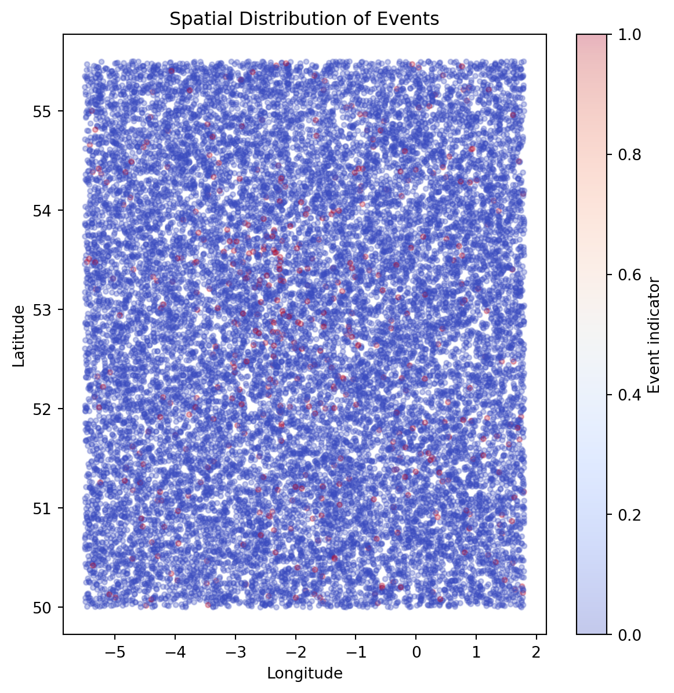
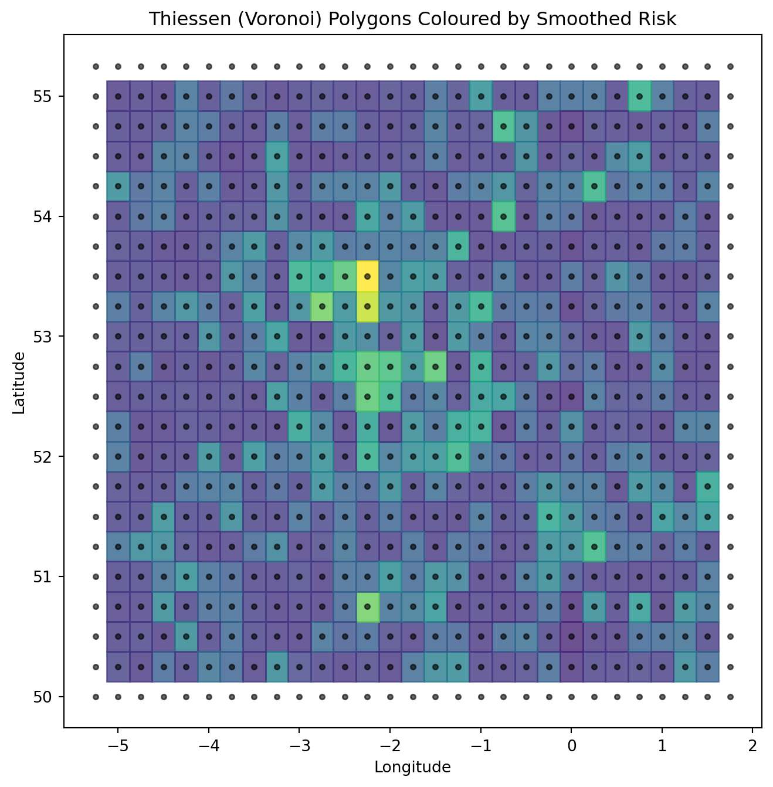
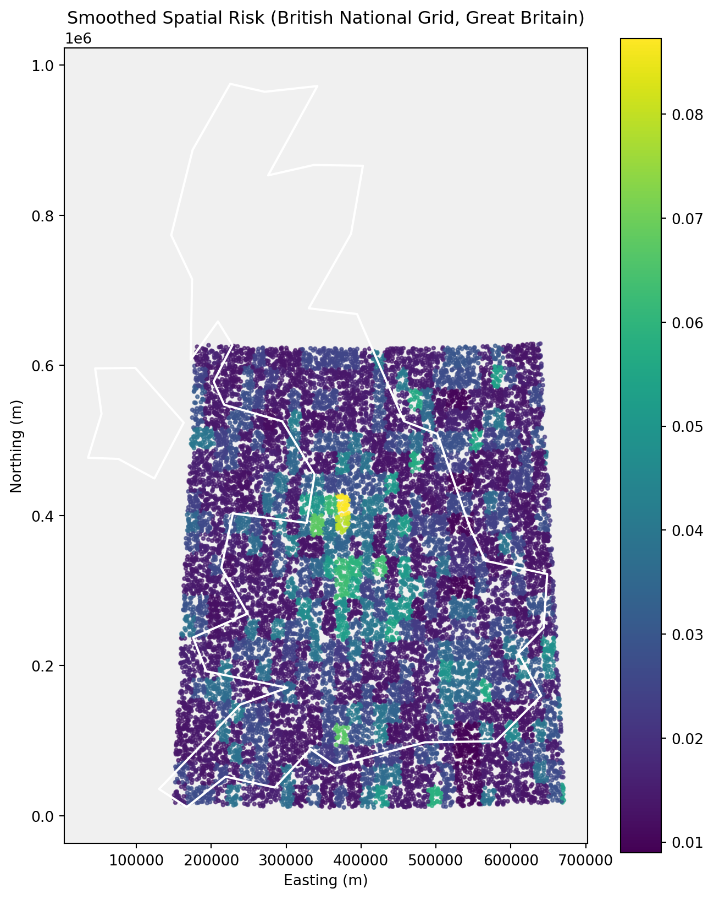

Incorporating Geospatial Context into Risk Modelling
Overview
This project demonstrates how geospatial context can be incorporated into predictive risk models using aggregated, non‑identifying spatial features. The emphasis is on feature construction, spatial smoothing, and avoiding information leakage rather than on fine‑grained location data.
All data used in this project is synthetic or publicly available.
Problem Statement
We consider a hypothetical risk prediction problem where event likelihood varies spatially due to underlying environmental, behavioural, or socio‑economic factors. The goal is to construct geospatial features that capture this variation in a stable and privacy‑preserving way.
Key challenges include:
Spatial leakage
Sparsity in fine‑grained locations
Balancing resolution with robustness
Synthetic Spatial Data
import numpy as npimport pandas as pdnp.random.seed(123)n =20000# Synthetic latitude / longitude (approximate UK bounding box)lat = np.random.uniform(50.0, 55.5, n)lon = np.random.uniform(-5.5, 1.8, n)df = pd.DataFrame({"latitude": lat,"longitude": lon})df.head()
To incorporate spatial context in a robust and privacy‑preserving way, we discretise latitude and longitude into coarse spatial bins. This reduces sensitivity to exact coordinates while enabling aggregation of local risk signals.
# Define bin sizes (degrees)lat_bin_size =0.25lon_bin_size =0.25df["lat_bin"] = (df["latitude"] / lat_bin_size).astype(int)df["lon_bin"] = (df["longitude"] / lon_bin_size).astype(int)# Combine into a single spatial cell identifierdf["spatial_cell"] = df["lat_bin"].astype(str) +"_"+ df["lon_bin"].astype(str)df[["latitude", "longitude", "spatial_cell"]].head()
latitude
longitude
spatial_cell
0
53.830581
-4.868714
215_-19
1
51.573766
-1.235600
206_-4
2
51.247683
-2.048911
204_-8
3
53.032231
-0.370855
212_-1
4
53.957079
-2.130276
215_-8
Spatial Aggregation
Within each spatial cell, we compute aggregated statistics that summarise local event behaviour. These aggregates form the basis of geospatial risk features.
from shapely.geometry import Pointimport geopandas as gpdgeometry = [ Point(lon, lat)for lon, lat inzip(df["longitude"], df["latitude"])]gdf = gpd.GeoDataFrame(df, geometry=geometry, crs="EPSG:4326")gdf_bng = gdf.to_crs(epsg=27700)
Visualising Raw Spatial Events
We begin by visualising the spatial distribution of events to understand broad geographic patterns and clustering behaviour.
import matplotlib.pyplot as pltplt.figure(figsize=(7, 7))plt.scatter( df["longitude"], df["latitude"], c=df["event"], cmap="coolwarm", alpha=0.3, s=10)plt.xlabel("Longitude")plt.ylabel("Latitude")plt.title("Spatial Distribution of Events")plt.colorbar(label="Event indicator")plt.show()

Visualising Smoothed Spatial Risk
Aggregated and smoothed spatial features provide a clearer view of underlying geographic risk patterns.
Comparing individual‑level and aggregated spatial visualisations highlights the trade‑off between noise and signal. While raw location data is highly variable, spatial aggregation and smoothing reveal stable geographic patterns suitable for use in predictive models.
Thiessen (Voronoi) Polygons for Spatial Risk
To further visualise spatial structure, we construct Thiessen (Voronoi) polygons based on spatial cell centroids. Each polygon represents the region of space closest to a given cell, providing a continuous spatial partition coloured by smoothed risk.
For the curious, click here to learn more about Voronoi polygons
import numpy as npimport matplotlib.pyplot as pltfrom scipy.spatial import Voronoi# Prepare centroid coordinatespoints = np.column_stack([ cell_stats["lon_center"].values, cell_stats["lat_center"].values])# Compute Voronoi tessellationvor = Voronoi(points)# Plotplt.figure(figsize=(8, 8))# Plot Voronoi regionsfor region_index, region inenumerate(vor.regions):ifnot region or-1in region:continue# Skip infinite regions polygon = [vor.vertices[i] for i in region] polygon = np.array(polygon)# Find corresponding point index point_indices = np.where(vor.point_region == region_index)[0]iflen(point_indices) ==0:continue idx = point_indices[0] risk_value = cell_stats.iloc[idx]["smoothed_event_rate"] plt.fill( polygon[:, 0], polygon[:, 1], color=plt.cm.viridis(risk_value / cell_stats["smoothed_event_rate"].max()), alpha=0.8 )# Overlay centroidsplt.scatter( cell_stats["lon_center"], cell_stats["lat_center"], c="black", s=10, alpha=0.6)plt.xlabel("Longitude")plt.ylabel("Latitude")plt.title("Thiessen (Voronoi) Polygons Coloured by Smoothed Risk")plt.show()

Mapping Spatial Risk Using the British National Grid
To visualise spatial risk in a cartographically appropriate coordinate system, we project locations onto the British National Grid (BNG). This projection is commonly used for mapping and spatial analysis within Great Britain, providing distance‑preserving coordinates in metres.
Northern Ireland uses a separate national grid and is therefore excluded from this visualisation for technical correctness.
import geopandas as gpdfrom shapely.geometry import Point# Load Natural Earth country boundaries (110m resolution)url ="https://naturalearth.s3.amazonaws.com/110m_cultural/ne_110m_admin_0_countries.zip"world = gpd.read_file(url)# Extract United Kingdomuk = world[world["NAME"] =="United Kingdom"]uk
featurecla
scalerank
LABELRANK
SOVEREIGNT
SOV_A3
ADM0_DIF
LEVEL
TYPE
TLC
ADMIN
...
FCLASS_TR
FCLASS_ID
FCLASS_PL
FCLASS_GR
FCLASS_IT
FCLASS_NL
FCLASS_SE
FCLASS_BD
FCLASS_UA
geometry
143
Admin-0 country
1
2
United Kingdom
GB1
1
2
Country
1
United Kingdom
...
None
None
None
None
None
None
None
None
None
MULTIPOLYGON (((-6.19788 53.86757, -6.95373 54...
1 rows × 169 columns
# Convert point data to GeoDataFramegeometry = [ Point(lon, lat)for lon, lat inzip(df["longitude"], df["latitude"])]gdf = gpd.GeoDataFrame(df, geometry=geometry, crs="EPSG:4326")# Reproject to British National Grid (EPSG:27700)uk_bng = uk.to_crs(epsg=27700)uk_bng
featurecla
scalerank
LABELRANK
SOVEREIGNT
SOV_A3
ADM0_DIF
LEVEL
TYPE
TLC
ADMIN
...
FCLASS_TR
FCLASS_ID
FCLASS_PL
FCLASS_GR
FCLASS_IT
FCLASS_NL
FCLASS_SE
FCLASS_BD
FCLASS_UA
geometry
143
Admin-0 country
1
2
United Kingdom
GB1
1
2
Country
1
United Kingdom
...
None
None
None
None
None
None
None
None
None
MULTIPOLYGON (((124122.565 449434, 76073.084 4...
1 rows × 169 columns
Keep only Great Britain (approximate longitude filter)
C:\Users\morri\AppData\Local\Temp\ipykernel_23992\2014797042.py:1: UserWarning:
Geometry is in a geographic CRS. Results from 'centroid' are likely incorrect. Use 'GeoSeries.to_crs()' to re-project geometries to a projected CRS before this operation.
from shapely.geometry import Pointimport geopandas as gpdgeometry = [ Point(lon, lat)for lon, lat inzip(df["longitude"], df["latitude"])]gdf = gpd.GeoDataFrame(df, geometry=geometry, crs="EPSG:4326")gdf_bng = gdf.to_crs(epsg=27700)gdf_bng.head()
latitude
longitude
spatial_risk
event
lat_bin
lon_bin
spatial_cell
smoothed_event_rate
geometry
0
53.830581
-4.868714
0.006423
0
215
-19
215_-19
0.014652
POINT (211310.296 440963.865)
1
51.573766
-1.235600
0.195246
0
206
-4
206_-4
0.027660
POINT (453071.279 186376.537)
2
51.247683
-2.048911
0.099452
0
204
-8
204_-8
0.041006
POINT (396682.661 149835.711)
3
53.032231
-0.370855
0.092219
0
212
-1
212_-1
0.028019
POINT (509347.525 349568.357)
4
53.957079
-2.130276
0.387473
0
215
-8
215_-8
0.028388
POINT (391549.07 451228.895)
import matplotlib.pyplot as pltfig, ax = plt.subplots(figsize=(8, 10))# Set subtle background colourax.set_facecolor("#f0f0f0")# Plot spatial risk points firstgdf_bng.plot( ax=ax, column="smoothed_event_rate", cmap="viridis", markersize=5, alpha=0.7, legend=True)# Plot GB boundary ON TOP as white outlineuk_gb_bng.plot( ax=ax, facecolor="none", edgecolor="white", linewidth=1.5)ax.set_title("Smoothed Spatial Risk (British National Grid, Great Britain)")ax.set_xlabel("Easting (m)")ax.set_ylabel("Northing (m)")plt.show()

Country boundaries are sourced from Natural Earth (public domain) and projected into the British National Grid (EPSG:27700). Northern Ireland is excluded due to its use of a separate national grid reference system.
WIP - Visualisation
import geopandas as gpdlsoa = gpd.read_file(r"C:\Users\morri\PycharmProjects\shmers.github.io\geodata\Lower_layer_Super_Output_Areas_December_2021_Boundaries_EW_BGC_V5_-6970154227154374572.gpkg")lsoa.head()
LSOA21CD
LSOA21NM
LSOA21NMW
BNG_E
BNG_N
LAT
LONG
GlobalID
geometry
0
E01000001
City of London 001A
532123
181632
51.518169
-0.097150
{86214465-5CF4-4E8F-9492-3667471C42D6}
MULTIPOLYGON (((532105.312 182010.574, 532104....
1
E01000002
City of London 001B
532480
181715
51.518829
-0.091970
{CD40C491-6567-405F-8C18-426E17B356CE}
MULTIPOLYGON (((532634.497 181926.016, 532572....
2
E01000003
City of London 001C
532239
182033
51.521740
-0.095330
{7FD27AAF-D858-4E46-9099-92B43F66B948}
MULTIPOLYGON (((532135.138 182198.131, 532071....
3
E01000005
City of London 001E
533581
181283
51.514690
-0.076280
{7E76A16A-028F-4F49-84B5-6E5A67322F3C}
MULTIPOLYGON (((533808.018 180767.774, 533842....
4
E01000006
Barking and Dagenham 016A
544994
184274
51.538750
0.089317
{25AB047E-6FCF-4F76-9176-E92E44C0E097}
MULTIPOLYGON (((545122.049 184314.931, 545118....
Reproject to BNG
lsoa_bng = lsoa.to_crs(epsg=27700)lsoa_bng.crs
<Projected CRS: EPSG:27700>
Name: OSGB36 / British National Grid
Axis Info [cartesian]:
- E[east]: Easting (metre)
- N[north]: Northing (metre)
Area of Use:
- name: United Kingdom (UK) - offshore to boundary of UKCS within 49°45'N to 61°N and 9°W to 2°E; onshore Great Britain (England, Wales and Scotland). Isle of Man onshore.
- bounds: (-9.01, 49.75, 2.01, 61.01)
Coordinate Operation:
- name: British National Grid
- method: Transverse Mercator
Datum: Ordnance Survey of Great Britain 1936
- Ellipsoid: Airy 1830
- Prime Meridian: Greenwich
LSOA boundary data are sourced from the UK Office for National Statistics Open Geography Portal and stored locally to ensure reproducibility. This avoids reliance on unstable external URLs while preserving authoritative geography under the Open Government Licence.
Load population CSV
pop = pd.read_csv(r"C:\Users\morri\PycharmProjects\shmers.github.io\geodata\Mid 2022 LSOA 2021.csv")print(pop.columns.tolist())pop.head()
['LAD 2023 Code', 'LAD 2023 Name', 'LSOA 2021 Code', 'LSOA 2021 Name', 'Total', 'F0 to 15', 'F16 to 29', 'F30 to 44', 'F45 to 64', 'F65 and over', 'M0 to 15', 'M16 to 29', 'M30 to 44', 'M45 to 64', 'M65 and over']
LAD 2023 Code
LAD 2023 Name
LSOA 2021 Code
LSOA 2021 Name
Total
F0 to 15
F16 to 29
F30 to 44
F45 to 64
F65 and over
M0 to 15
M16 to 29
M30 to 44
M45 to 64
M65 and over
0
E06000001
Hartlepool
E01011949
Hartlepool 009A
1,876
182
166
189
274
179
189
181
152
236
128
1
E06000001
Hartlepool
E01011950
Hartlepool 008A
1,117
96
79
102
147
99
104
92
138
175
85
2
E06000001
Hartlepool
E01011951
Hartlepool 007A
1,260
90
126
139
170
90
133
100
146
189
77
3
E06000001
Hartlepool
E01011952
Hartlepool 002A
1,635
193
134
156
207
196
194
109
104
202
140
4
E06000001
Hartlepool
E01011953
Hartlepool 002B
1,984
216
220
190
231
145
290
177
160
232
123
Extract relevant columns
pop = pop.rename(columns={"LSOA 2021 Code": "LSOA21CD","Total": "population"})pop = pop[["LSOA21CD", "population"]]pop.head()